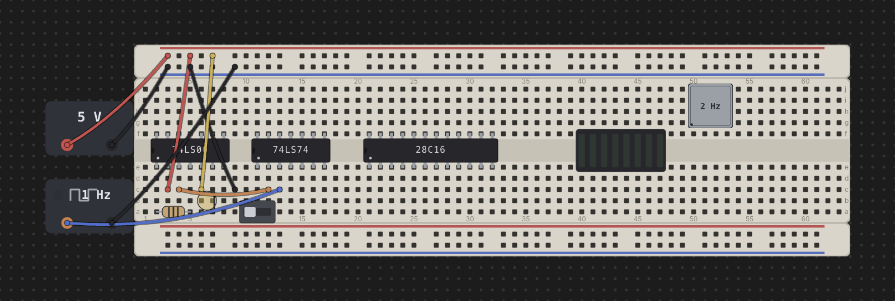

The Desk & Breadboards
The desk is Chip Hippo's infinite, pannable, zoomable workspace — the place every board, chip, wire, and power source lives. This page covers how to move around the desk and how breadboards actually work under the hood: they are not single parts but individual strips — a pin-board plus power rails — that snap and mate together the way real boards do on a bench.

Pan, zoom & fit to screen
The desk has no edges — pan and zoom to work at whatever scale suits the circuit in front of you.
- Pan: click-drag an empty patch of desk, or two-finger scroll on a trackpad.
- Zoom: scroll/pinch to zoom, centered on the pointer, or use the
+ / − buttons in the zoom control. Keyboard:
Cmd/Ctrl+=(zoom in),Cmd/Ctrl+-(zoom out),Cmd/Ctrl+0(reset to 100%). - Fit to screen:
Cmd/Ctrl+Fframes everything currently on the desk in the viewport — the fastest way to find your circuit after panning away. - Zoom out full:
Cmd/Ctrl+Shift+Fzooms all the way out, useful for locating a part on a very large or sprawling layout.
A faint dot grid marks the 0.1 in hole pitch under everything you place; it coarsens at low zoom and disappears entirely once you're zoomed out too far for individual holes to matter. Zoom and pan position are remembered between sessions.
Breadboards are strips
A real solderless breadboard is not one molded part — it's a centre pin-board with one or two power-rail strips dovetailed onto its top and bottom edges. Chip Hippo models this literally: each strip is its own object on the desk, and what looks like "a breadboard" is a small kit of strips placed together in one action.
The palette offers three assembled kits:
- Full 830 — a full-length pin-board with a rail strip above and below.
- Half 400 — the same layout at half length.
- Tiny 170 — a bare pin-board only; the real 170-point part ships with no rails at all, so this kit is a single strip.
On a pin-board, rows run top to bottom as j i h g f, then the trench,
then e d c b a. The trench is the gap down the centre that isolates the top
half of each column from the bottom half electrically — a DIP chip straddles
the trench, with one row of pins in f and the other in e, exactly as it
would seat on a real board. A power-rail strip carries both a + and a −
line, each one continuous connection along its whole length, independent of
every other strip.
See Chips & Components for how chips and discretes seat into the grid, and Power & Clock Sources for feeding a rail from a PSU.
Kits vs. loose strips
Below the assembled kits, the palette also offers the individual strips on their own — a bare Full pin-board, a bare Half pin-board, a spare Full power rail, and a spare Half power rail. Reach for these when a board shipped without enough rails, when you want a rail somewhere a kit wouldn't put one, or when you're building up a custom layout strip by strip. Placing, ghosting, and overlap checking all work identically whether you're dropping a whole kit or a single loose strip.
Snapping & mating
Drop a strip within a couple of tenths of an inch of another strip it can dovetail with — matching width when stacked, matching height side by side, meeting flush with no gap — and it snaps into place automatically. This is the same magnetic pull whether you're dragging a placed strip or holding a fresh one from the palette; a whole kit snaps as one piece, and the pull only ever engages when the snapped position is still legal (it will never pull a strip into an illegal overlap).
Two strips that end up flush mate: they join a shared group and from then on drag together as one rigid unit, just like a real breadboard's rails stay attached to its pin-board when you nudge it on the bench. A kit arrives pre-grouped; anything you drop flush against an existing board joins its group (or merges two groups into one, if it bridges a gap). When several strips are mated, clicking any one of them highlights the whole set — the outline traces the union of the group's strips, so flush neighbours read as one board rather than showing a seam between them.
Groups & breaking a snap
Grabbing a mated strip normally drags the whole group together. To pull just part of a group apart, hold a modifier while you start the drag:
- Option-drag — moves the reachable run forward from the strip you grabbed: itself plus every strip mated to it through a below/right edge.
- Option+Shift-drag — moves the run backward instead, following above/left edges.
Either way, only strips still reachable through the group come along; a strip that merely happens to sit flush elsewhere in the layout is left behind. When you drop a torn-off run, both the piece you moved and what's left of the original group are re-evaluated — each is split into fresh groups based on what's still actually mated within it, so the two halves never end up sharing a group id after the break.
Rotating a rail
Power rails can rotate; pin-boards cannot. A pin-board's trench (and every DIP seated across it) only makes sense in one orientation, so it's locked at 0°. A rail strip is just two parallel lines of holes, so it reads the same standing on end — turned 90° it becomes a vertical signal bus you can run alongside a board and tap into at any point along its length.
Press R while a rail is in hand (mid-placement, before you click it down)
to cycle its rotation through 0°/90°/180°/270°. Once a strip is placed its
angle is fixed; to change it, pick it up again. Rotating doesn't change
anything electrically — a rail is one continuous node however it's turned —
it only changes which way the strip's footprint runs on the desk.
Next: Chips & Components for populating a board, or Wiring, Nets & Buses for connecting everything up.